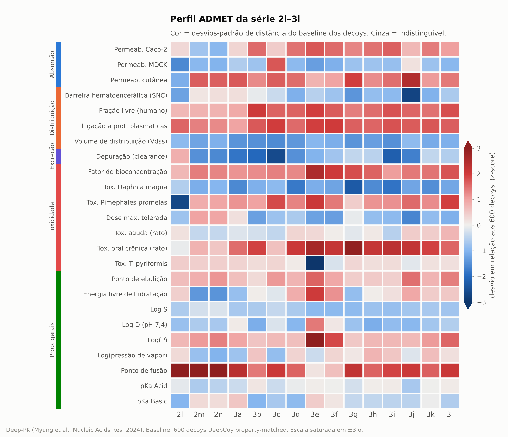
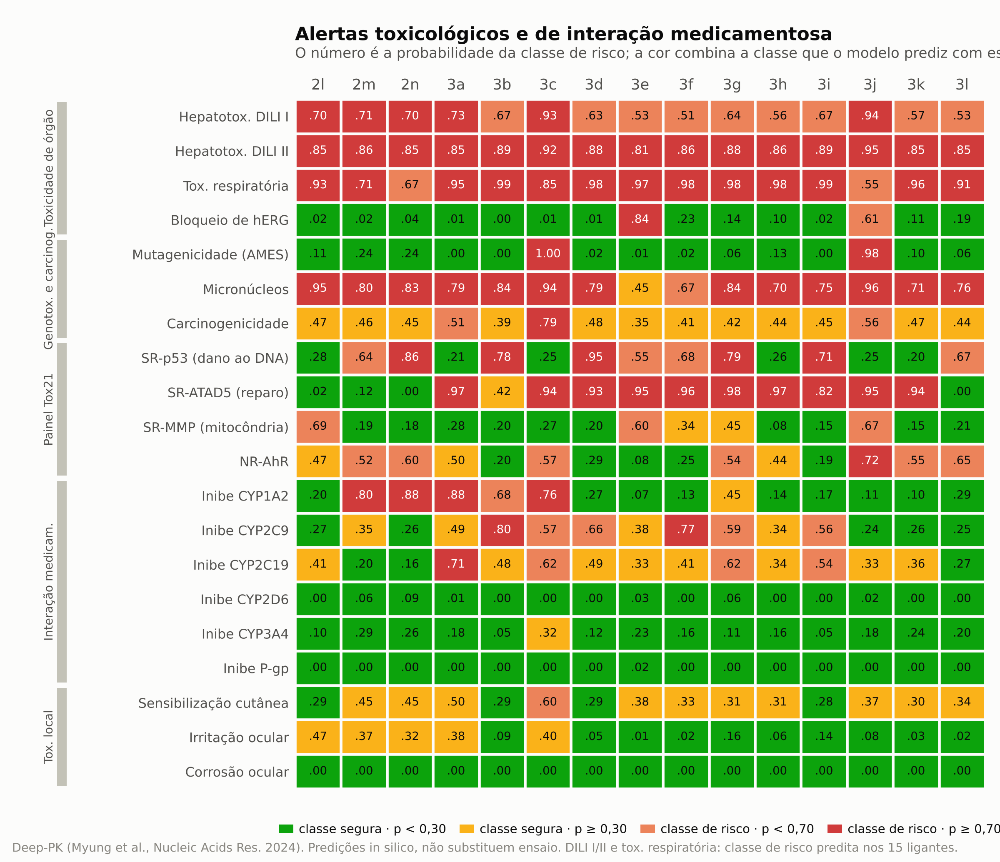
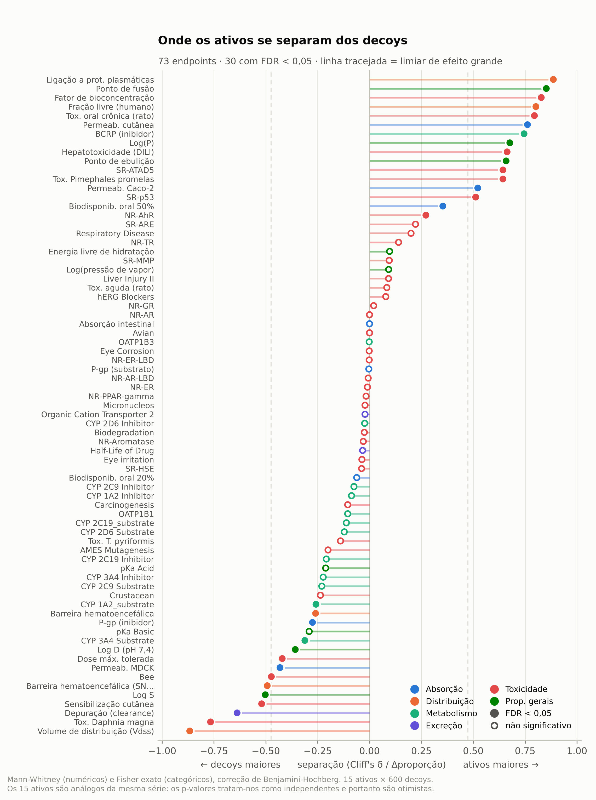
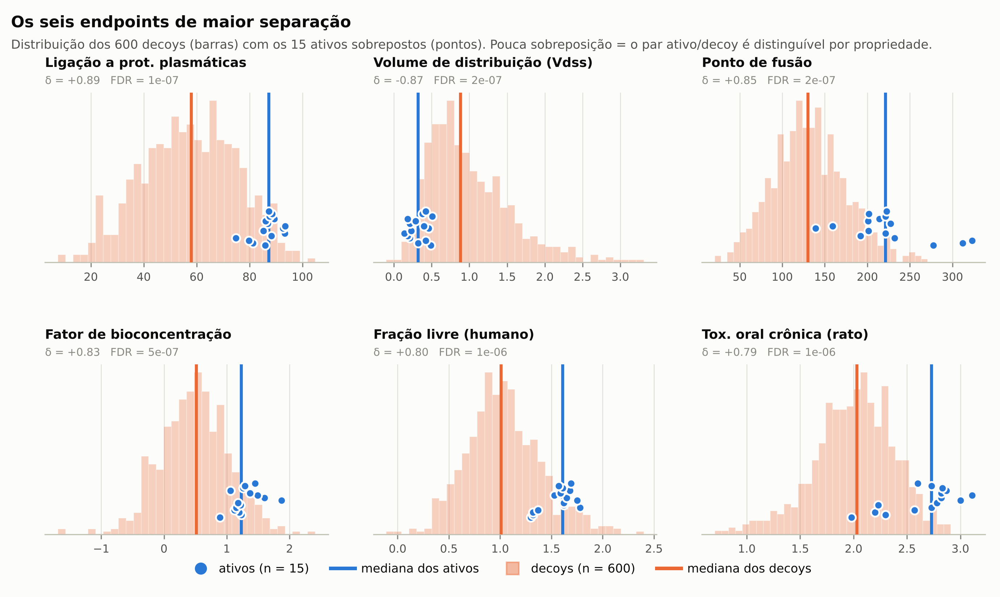
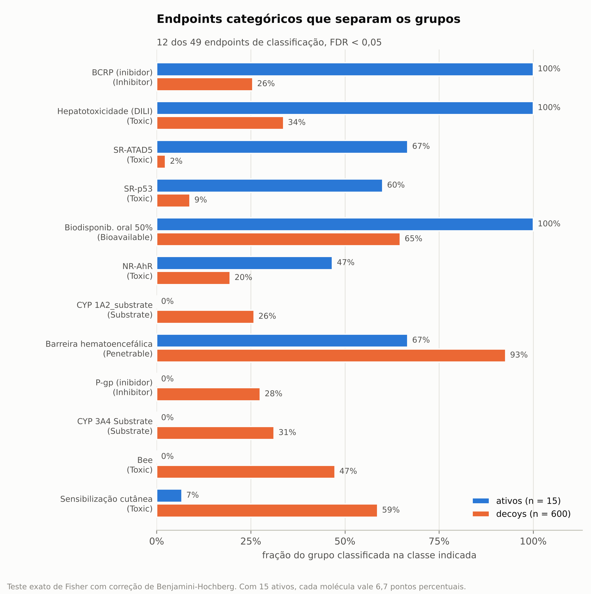

Predições ADMET do Deep-PK para a série 2l–3l (15 ligantes) contra 600 decoys DeepCoy. Todas em 300 dpi; clique para abrir em tamanho cheio.
Heatmap dos 24 endpoints de regressão para os 15 ligantes. A cor é o z-score em relação à mediana dos 600 decoys: cinza significa indistinguível do baseline. As colunas quase idênticas mostram que a série é farmacocineticamente homogênea (desvio-padrão mediano de 0,71 σ entre os ligantes).

Matriz de 20 endpoints de risco por ligante. O número é a probabilidade da classe de risco; a cor combina essa probabilidade com a classe que o modelo prediz. Hepatotoxicidade (DILI I e II) e toxicidade respiratória aparecem nos 15 ligantes; hERG, CYP2D6, CYP3A4 e P-gp ficam praticamente limpos.

Tamanho de efeito dos 73 endpoints, ordenado. Pontos cheios indicam FDR < 0,05 (30 endpoints); anéis vazados, não significativo. As linhas tracejadas marcam o limiar de efeito grande. Mann-Whitney para os numéricos, Fisher exato para os categóricos, correção de Benjamini-Hochberg.

Os seis endpoints numéricos com maior efeito. Barras: distribuição dos 600 decoys. Pontos: os 15 ativos. A pouca sobreposição indica que o par ativo/decoy é distinguível por propriedade, e não apenas por complementaridade ao sítio.

Proporção de cada grupo na classe indicada, nos 12 endpoints de classificação com FDR < 0,05. Com 15 ativos, cada molécula vale 6,7 pontos percentuais — daí os valores de 0% e 100%.
